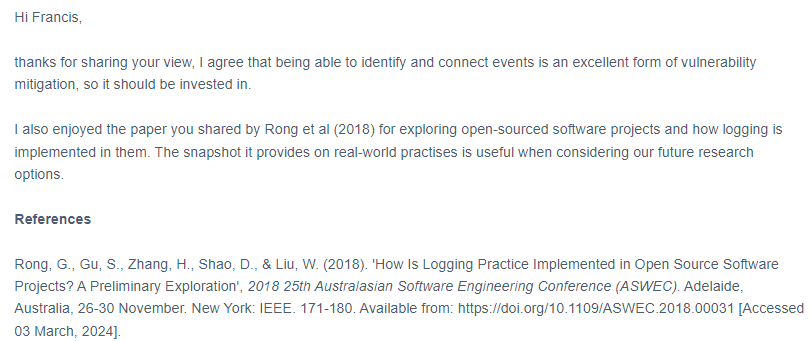
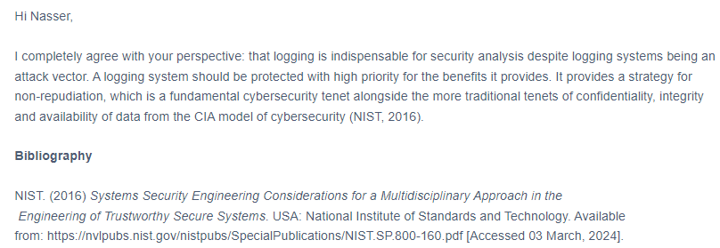
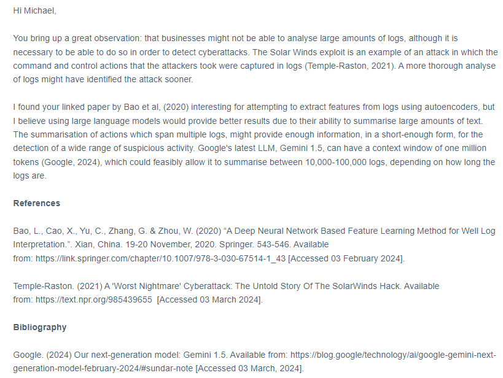

Week 5
The Pros and Cons of Logging - The Impact of log4j
Below are three responses I wrote to my peers as a response to their own thoughts on the pros and cons of logging:
  The Future of the Internet
This week I also examined protocols that I believe will be adopted in the future including IPv6, DNSSEC and QUIC. A powerpoint presentation that I presented to my peers is available here.